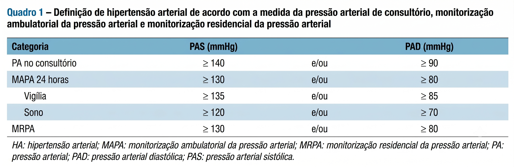
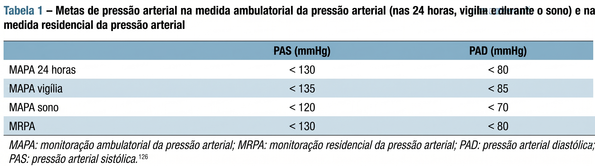
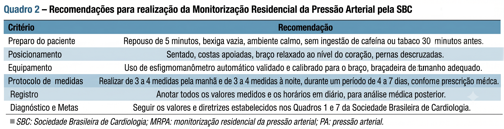

AMERICAN HEART ASSOCIATION (AHA). Monitoring Your Blood Pressure at Home. [S. l.], [2025]. Disponível em: link. Acesso em: 10 jul. 2026.
JONES, Daniel W. et al. 2025. AHA/ACC/AANP/AAPA/ABC/ACCP/ACPM/AGS/AMA/ASPC/NMA/PCNA/SGIM Guideline for the Prevention, Detection, Evaluation and Management of High Blood Pressure in Adults: A Report of the American College of Cardiology/American Heart Association Joint Committee on Clinical Practice Guidelines. Circulation, [S. l.], v. 152, n. 11, 2025. DOI: 10.1161/CIR.0000000000001356. Disponível em: link. Acesso em: 10 jul. 2026.
REVISTA BRASILEIRA DE HIPERTENSÃO. Diretrizes de Monitorização Residencial da Pressão Arterial. São Paulo: Sociedade Brasileira de Cardiologia - Departamento de Hipertensão Arterial, v. 25, n. 2, 2018. Disponível em: link. Acesso em: 10 jul. 2026.
SOCIEDADE BRASILEIRA DE CARDIOLOGIA; SOCIEDADE BRASILEIRA DE HIPERTENSÃO; SOCIEDADE BRASILEIRA DE NEFROLOGIA. Diretriz Brasileira de Hipertensão Arterial - 2025. Arquivos Brasileiros de Cardiologia, São Paulo, v. 122, n. 9, 2025. DOI: 10.36660/abc.20250624. Disponível em: link. Acesso em: 10 jul. 2026.